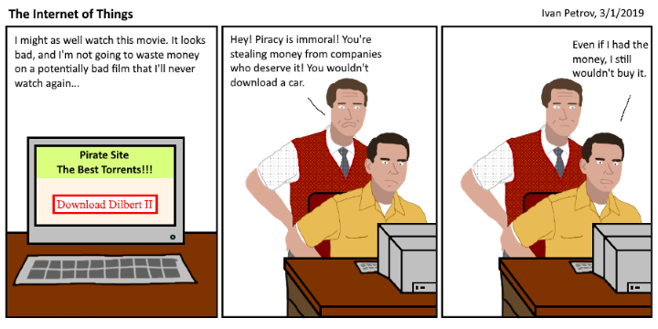

Whelp, here it is... the seldom-used ramblings page. I'll occasionally post bits of text or other miscellaneous media that doesn't fit
|
|
Careers - 1/27/2020 [Ivan] Although I still have a bit of time, I can't help but feel anxious about choosing a future career. For most of my life, I wanted to go into computer science. In middle school, I started to become interested in business. Now I'm a sophomore in High School whose trying to choose between aspiring to get a CS degree or to go to medschool and become a neurologist. I surely have the grades for both, but I can really only choose one (college costs money). AP Torture - 11/22/2019 [Ivan] It's a shame that these days, school is more about doing well on tests and getting degrees than actually learning the material. As a sophomore, I've had to endure two AP classes and while I know that I need them for college, I can't help but feel that I've not learnt much. The strong focus of the class is cramming enough info in to your head so you can dump it into the AP test, get a 5, and forget it all, and that's really a shame. And in all honesty, the class material really isn't that hard, or wouldn't be if the teacher actually taught us. The hardest parts are the insane amount of homework (which the teacher only collects at random) and the teacher's asinine grading scale. Sure, I'm doing well in the class but if APs weren't so essential to get into college, then I'd rather just take their honors counterparts. Summer - 8/18/2019 [Ivan] Whelp, summer vacation is almost over and... I spent the entire time playing video games and watching videos. Fun. A word about intelligence - 4/8/2019 [Ivan] I once read something pretty good online a while ago. I don't remember who wrote it, but I still have a screenshot. It reads: "Intelligence doesn't mean you are right all the time, and you have perfected everything. It doesn't mean you know all the words and spellings and grammar. Intelligence is about awareness. Your level of awareness (and not knowledge) defines you level of intelligence." The Internet of Things - 3/1/2019 [Ivan]  Swearing [TechMT] Now I want to start this off by saying I swear like a sailor. Even so, I have a problem with it. When someone swears, it doesn't have to much of an impact. I feel like you can get your point across without swearing, and you don't look like an idiot who constantly swears. On the contrary, if it is used in the right circumstances, it can be powerful, and also contribute a lot. School Is Only As Fun as You Make It [Ivan] If you dislike school, why? Do you not like the teachers, your peers, or the actual material? Do you find it to be boring? Although you may never use your knowledge of angle proofs or synthetic division after graduating, you still gain the very valuable skill of doing something that you dislike. The point is, you can't avoid school. Why not make the best of it? As I've observed, your mindset is one of the most important things. Just the act of waking up and forcing yourself to act excited for school can make you all the bit more motivated and content throughout the day. When you learn about something that's interesting, don't be afraid to look it up. Enthusiasm is everything. Health Anxiety [Ivan] If you feel unwell or notice that something isn't quite right with your body, it's best to refrain from searching all of your symptoms. I, for one, can speak from personal experience. What was a small, harmless foot twitch ended up becoming Parkinson's, then ALS, then MS, and finally a brain tumor. Of course it wasn't any of those things, but that's what kept running through my mind. Although each of these ailments are almost unheard of in young adults, how was my otherwise rational mind lead to these startling conclusions? Anxiety can manifest itself into many different forms, often effecting parts of the body and producing symptoms which mimic those of severe diseases. As has happened to many medical students, as you study a frightening disease you can begin to feel mild "symptoms" and from there all rational decision making and reasoning goes out the window. You begin to notice little buzzes and twitches and eye floaters which you swear were always there, but you can't stop looking at them. If you were seriously ill, it would be much more difficult to perform daily tasks. Along with that, statistics prove that you don't have too much to worry about since a good deal of these disorders affect more seniors than adolescents. Also, try cutting the doctor shows and medical news if you can. It'll greatly help. Just Some Random Thoughts [TechMT] Some types of math are just so weird, I don't know why they exist. Like unless you're going to become a super scientist, and work on engines or something like that, we don't need to learn anything past geometry. | |
Page last updated 6/7/2020
|